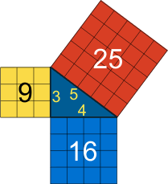
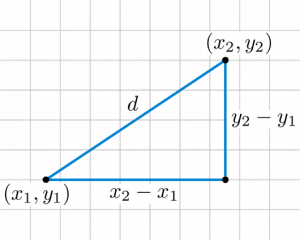
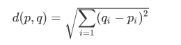
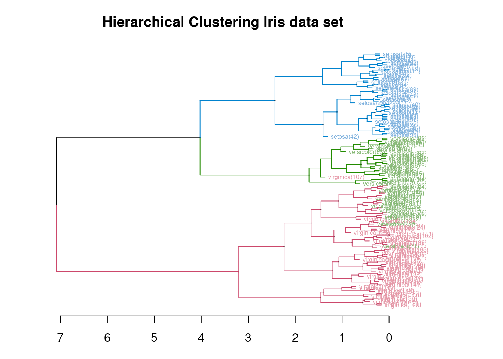
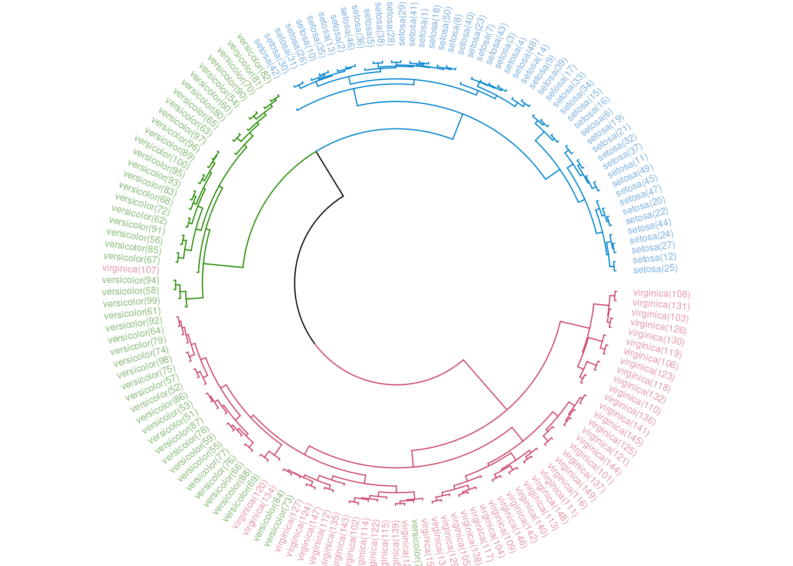
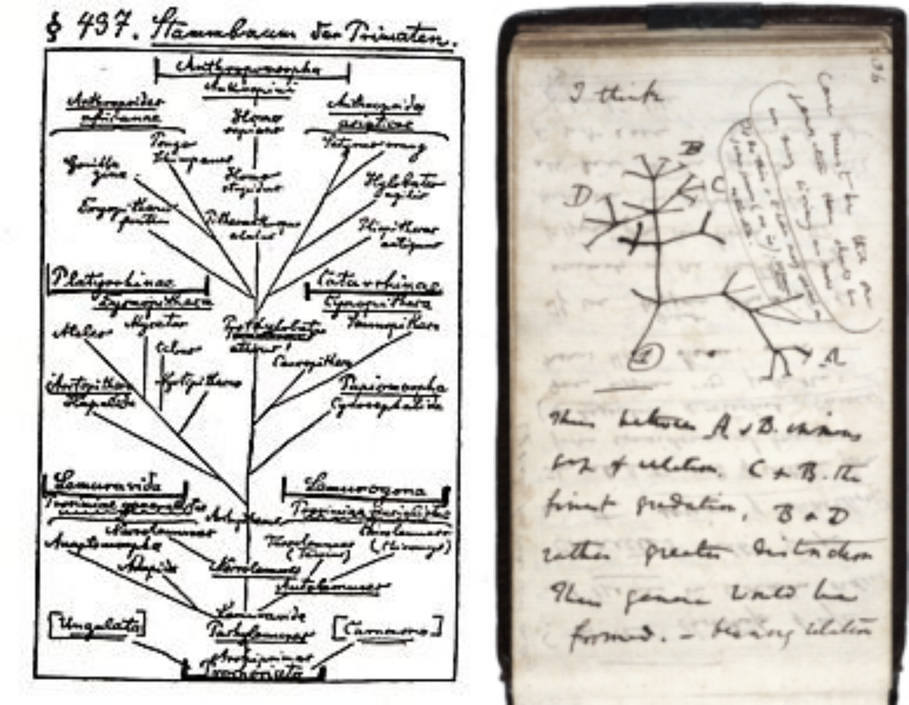

Before we get to phylogenetics let’s look at some iris data. As with many other bioinformatic techniques, phylogenetics stems from older methods. Hierarchical clustering is a form of unsupervised machine learning and unlike some of the other methods of this kind, you do not have to specify the number of clusters you want prior to the analysis. The picture below illustrates what we will be looking at.
iris
The ‘iris’ dataset is quite famous and is used in many books and tutorials on machine learning. https://en.wikipedia.org/wiki/Iris_flower_data_set
The data set consists of four different attributes, namely: sepal length, sepal width, petal length and petal width (all measured in cm). There are 50 observations for each class and they are like in the image above, versicolor, setosa and virginica.
I could show you the data, but let’s rather look at some fun plots.
Loading required package: ggplot2
Registered S3 method overwritten by 'GGally':
method from
+.gg ggplot2
The pairs plotted above plot each attribute or variable against each. Why would this be useful?
From the above plot, it is now clear that petal length and width are the attributes which are most discriminating between the 3 different flower species. So if we would like to group these into clusters based on their attributes the above-mentioned would do the best job. Also, remember that the attributes are measured in cm which means that we can use this numeric data to construct a distance matrix. Once we have a distance matrix we can create a dendrogram. So how would we calculate the distance between observations? Remember we have 150 observations, 50 of each specie. We would like to calculate the distance of each observation against each. If you now think about that, if we plot these distances, they should form clusters.
How do we calculate distances? Remember Pythagoras’s theorem?

Pythagoras
Or do you remember getting the distance between two points on a cartesian coordinate system, the image below should help.
 So how do we calculate the distance (d) between points (x1, y1) and (x2,y2)?

euclidean


We can see from the above image that we mostly managed to correctly cluster the iris species.
Phylogenetics
I am borrowing HEAVILY from the link below and I would encourage you to have a look yourself.
You can also go over to EMBL-EBI Training website https://www.ebi.ac.uk/training/ for other free training opportunities as well. Maybe have a look at this introduction video
… what is phylogenetics
What is phylogenetics
If you recall from the previous installment of the course we looked at multiple sequence alignment and distance matrices. Like with our flowers in the above sections, we can use a multiple sequence alignment to calculate distance matrices and infer phylogenetic relationships.
Typically phylogeneticists study one of the following types of question: • What are the evolutionary relationships or histories among my species/individuals/genes of interest? • How do sequences evolve? • Can I better describe processes of sequence evolution with a mathematical model?
As we can see from the images below, a ‘tree of life’ is an old idea long before the discovery of DNA in 1950 and the first DNA sequence in 1970.

Ernst Haeckel and Charles Darwin
The field of phylogenetic analysis is a broad one with various methods and models. Most researchers look at methods and models already used by those before them and learn what they need to know on a need-to-know basis. Also if we would like to look at this topic in depth, I would rather call in an expert to present it. A nice book on the topic is: The Phylogenetic Handbook: A Practical Approach to Phylogenetic Analysis and Hypothesis Testing. ISBN-13: 978-0521730716
Let’s rather apply this technique to solving a pending real word disaster.
Influenza: Practical session
Influenza A virus is a negative sense, single-stranded, segmented RNA virus. This Flu virus evolves through 2 mechanisms.
Genetic Drift: This is the small changes in the genome where mutations occur within the segments.
Genetic Shift: This is also sometimes called re-assortment and is typical of segmented viruses like influenza A, rotavirus, Crimean-Congo haemorrhagic fever virus and probably any segmented virus.
The figure below illustrates the re-assortment potential of a zoonotic virus. paper
Goneau et al. 2018
The image below illustrates the H7N9 virus found in China in 2013.
Goneau et al. 2018
Below illustrates the re-assortments for some of the pandemics.
Goneau et al. 2018
A video from The WHO
A very interesting TED talk
Practical
Background: In 2013 a novel influenza A virus which infects humans was identified in China. Liu et al (2013) published the work in The Lancet.
We will do something similar, but more obvious. Looking at the tables above showing the hemagglutinin and neuraminidase we see for example that H1 and N1 can be found in humans, birds and pigs. Now imagine genetic drift in these segments in their respective hosts. These segments could have diverged from the ‘wild type’ quite significantly in order to escape immune pressure. Let’s say we now get intra-subtype re-assortment, these segments can be so different that they can evade vaccine-acquired immunity and cause a pandemic.
Methods:
Disclaimer: It is important to note that this exercise is completely fictional and its purpose is to illustrate a concept.
And we will use the ‘A la Carte’ mode and infer our unknown respiratory swab to infer a subtype of H and N.
The easiest way to learn is to do.
Next we will interpret the results to try and figure out the reassortment. Remember this example is contrived, but illustrates a use case for phylogenetic analysis.